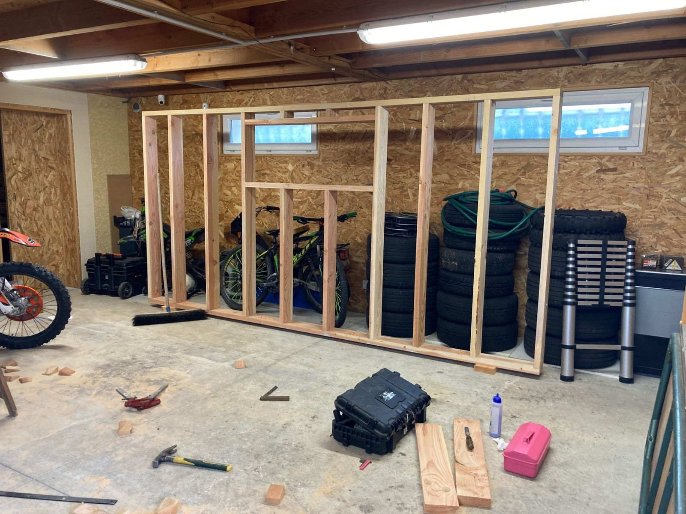
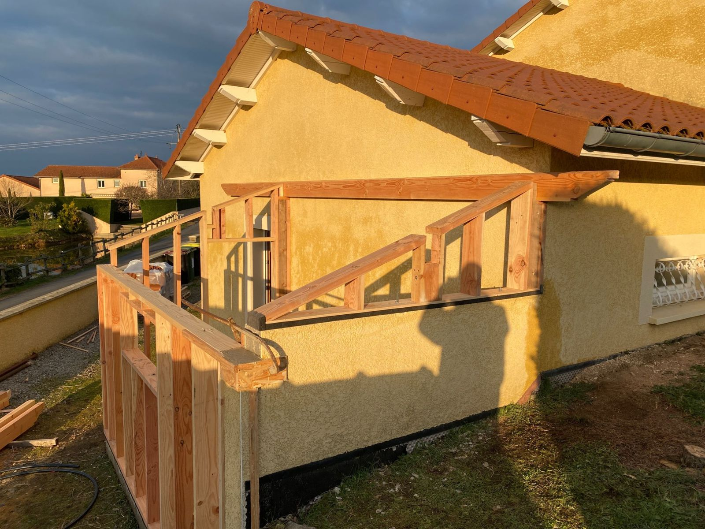
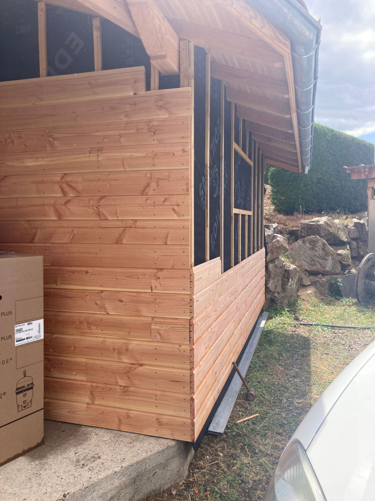
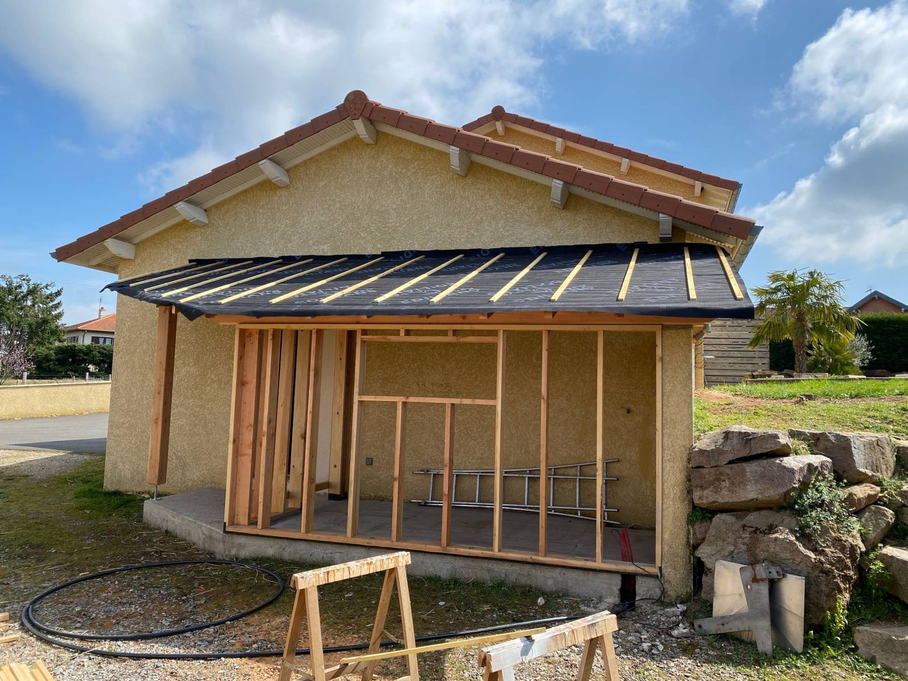
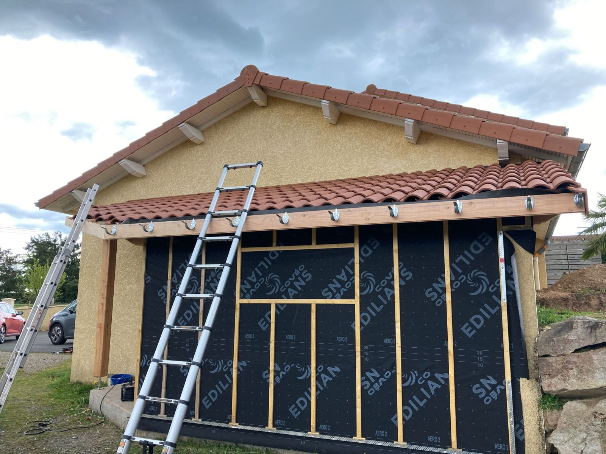
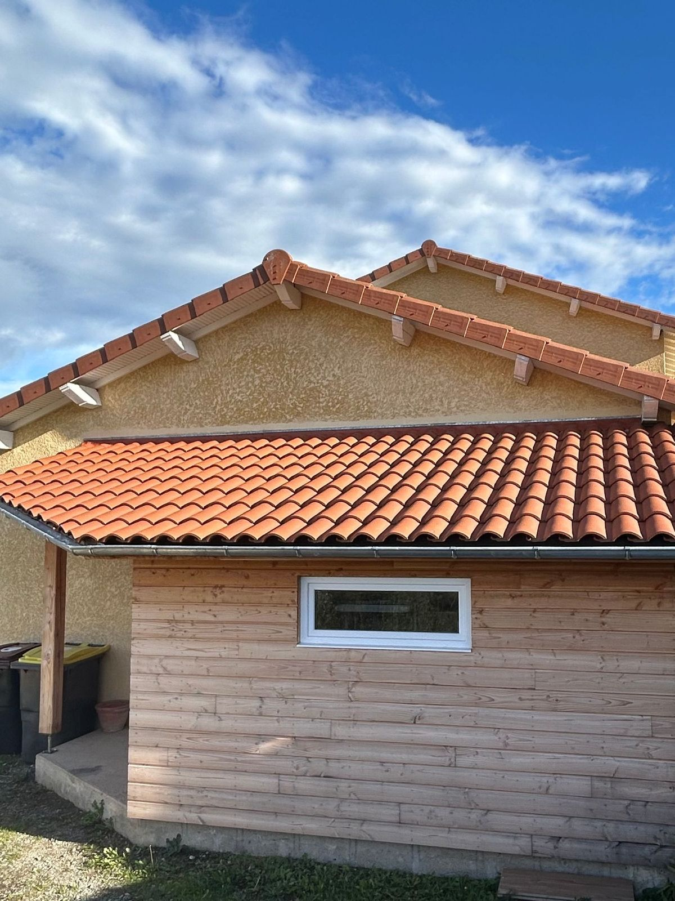

Trois métiers du toit, un seul artisan
La charpente porte le toit, la couverture le protège, la zinguerie évacue l'eau. Voici à quoi sert chacun, ce qu'il vous apporte et tout ce qu'on peut en faire.
Charpente

À quoi ça sert ?
La charpente, c'est l'ossature qui porte tout le toit. Elle supporte le poids de la couverture, de la neige et la poussée du vent, puis renvoie ces efforts vers les murs. Fermes, pannes, chevrons : chaque pièce a son rôle et sa section, calculées pour que le toit reste droit pendant des générations.
Elle peut être traditionnelle, taillée sur mesure en bois massif, en fermettes industrielles, ou en lamellé-collé pour les grandes portées.
Les avantages du bois
- Solide et léger à la fois : moins de charge sur vos murs et vos fondations.
- Matériau naturel et renouvelable, qui stocke du carbone.
- Bon isolant et chaleureux, il se laisse apparent dans les combles.
- Bien conçu, traité et ventilé, il dure très longtemps et se répare pièce par pièce.
Ce qu'on peut en faire



Le rappel du pro : une charpente se réalise selon le DTU 31.1 (et le DTU 31.2 pour l'ossature bois), avec des bois traités adaptés à leur exposition. Avant d'aménager des combles ou de changer de couverture, on vérifie toujours que la charpente supporte la nouvelle charge.
Couverture
À quoi ça sert ?
La couverture, c'est tout ce qu'on voit du toit. Elle rend la maison étanche à la pluie, au vent et à la neige, et protège la charpente et l'isolation qui sont dessous. Sous les tuiles ou les ardoises, un écran de sous-toiture et une bonne ventilation gardent les bois au sec.
Le matériau dépend de la région, de la pente du toit et du style de la maison : tuiles canal ou mécaniques, ardoise naturelle, zinc à joint debout ou bac acier.

Les avantages d'une couverture bien faite
- Une maison au sec : plus de fuites, d'humidité ni de bois qui pourrit.
- Une longue durée de vie : plusieurs dizaines d'années pour la tuile, encore plus pour l'ardoise naturelle.
- Une isolation qui reste efficace, car elle n'est jamais mouillée.
- Une belle maison qui garde sa valeur.
Ce qu'on peut en faire


Le rappel du pro : chaque matériau a sa pente minimale, qui dépend aussi de la région et de l'exposition au vent (DTU de la série 40.2 pour les tuiles, DTU 40.11 pour l'ardoise). Une tuile posée sous sa pente minimale finit toujours par fuir.
Zinguerie

À quoi ça sert ?
La zinguerie récupère toute l'eau qui tombe sur le toit et l'emmène loin des murs : gouttières, chéneaux et descentes. Elle assure aussi l'étanchéité des points sensibles, là où la couverture rencontre un autre élément : noues, solins contre un mur, abergements autour des cheminées et des fenêtres de toit.
Le métal se façonne sur place, sur mesure : on plie, on emboîte et on soude pour suivre exactement la forme du toit.
Les avantages du zinc et du métal
- Des façades et des fondations protégées : fini les traces, l'humidité et les infiltrations au pied des murs.
- Un métal durable et recyclable, qui prend une belle patine avec le temps.
- Du sur-mesure : chaque pièce est façonnée pour votre toit.
- Trois finitions au choix : zinc, cuivre ou inox.
Ce qu'on peut en faire


Le rappel du pro : la taille des gouttières et le nombre de descentes se calculent selon la surface du toit qu'elles reçoivent (DTU 40.5). Une gouttière trop petite déborde à chaque orage, même propre.
Un projet pour votre toit ?
Charpente, couverture ou zinguerie : je passe voir, je vous conseille et je vous fais un devis gratuit et détaillé.